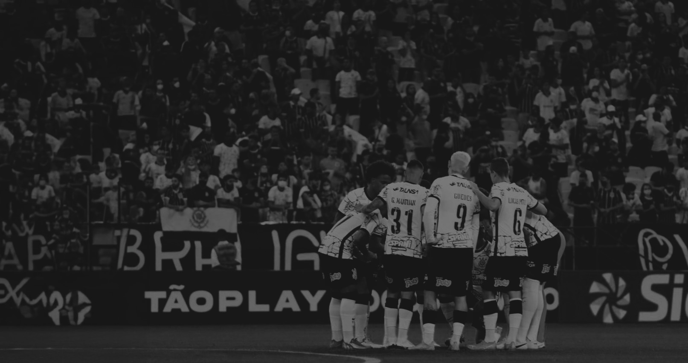

Salve o Corinthians
Reportagem especial
Corinthians: uma crise que vai além das quatro linhas
Por trás de uma história de conquistas e de uma das torcidas mais apaixonadas do Brasil, o Corinthians enfrenta uma das maiores crises políticas, administrativas e financeiras de sua trajetória. Com dívidas bilionárias e disputas internas, o clube vive um momento de incertezas que ultrapassa as quatro linhas.
Esta reportagem especial reúne dez matérias, entrevistas exclusivas e análises que buscam compreender as origens, os impactos e os possíveis caminhos para a recuperação do clube.
Entre os principais desafios está a dívida da Neo Química Arena, um dos maiores compromissos financeiros do Corinthians. Na entrevista com Ricardo Bianchini, o ex-integrante do departamento jurídico analisa os problemas administrativos e políticos da instituição.
O esgotamento financeiro do Corinthians é abordado pelo jornalista Fábio Lázaro, enquanto a entrevista com Alexandre Germano, ex-diretor financeiro, apresenta os desafios da gestão econômica. Já a crise política revela as disputas internas e a influência dos diferentes grupos nas decisões do clube.
Como alternativa, surge a SAFiel, projeto que propõe a participação dos torcedores na gestão do futebol. A iniciativa também ganhou espaço nas arquibancadas com a ação de torcedores em apoio à SAFiel, realizada na Neo Química Arena.
A reportagem ainda explora o impacto da crise dentro e fora de campo, os desdobramentos da expulsão de Andrés Sanchez e os desafios enfrentados pelas categorias de base, fundamentais para o futuro esportivo e financeiro do Corinthians.
Mais do que apresentar os problemas, este projeto reúne diferentes perspectivas para compreender como o Corinthians chegou a esse cenário e quais caminhos podem definir seu futuro.
Leia a reportagem